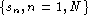
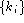
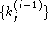
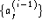
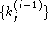
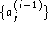

In linear prediction (LP) analysis, the
vocal tract transfer function
is modelled by an all-pole filter with transfer function
where p is the number of poles and .
The filter coefficients  are chosen to minimise
the mean square filter prediction error summed over the analysis
window. The HTK module HSIGP uses the autocorrelation
method to perform this optimisation as follows.
are chosen to minimise
the mean square filter prediction error summed over the analysis
window. The HTK module HSIGP uses the autocorrelation
method to perform this optimisation as follows.
Given a window of speech samples  , the first p+1 terms of the autocorrelation sequence are calculated from
where i = 0,p.
The filter coefficients are then computed recursively
using a set of auxiliary coefficients  which can be
interpreted as the reflection coefficients of an equivalent
acoustic tube and the prediction error E which is initially
equal to  . Let  and 
be the reflection and filter coefficients for a filter of order
i-1, then a filter of order i can be calculated in three steps.
Firstly, a new set of reflection coefficients are calculated.
. Let  and 
be the reflection and filter coefficients for a filter of order
i-1, then a filter of order i can be calculated in three steps.
Firstly, a new set of reflection coefficients are calculated.
for j = 1,i-1 and
Secondly, the prediction energy is updated.
Finally, new filter coefficients are computed
for j = 1,i-1 and
This process is repeated from i=1 through to the required filter order i=p.
To effect the above transformation, the target parameter kind must
be set to either LPC to obtain the LP filter parameters  or
LPREFC to obtain the reflection coefficients . The
required filter order must also be set using the configuration
parameter LPCORDER .
Thus, for example, the following configuration
settings would produce a target parameterisation
consisting of 12 reflection coefficients per vector.
or
LPREFC to obtain the reflection coefficients . The
required filter order must also be set using the configuration
parameter LPCORDER .
Thus, for example, the following configuration
settings would produce a target parameterisation
consisting of 12 reflection coefficients per vector.
TARGETKIND = LPREFC
LPCORDER = 12
An alternative LPC-based parameterisation is obtained by setting the target kind to LPCEPSTRA to generate linear prediction cepstra. The cepstrum of a signal is computed by taking a Fourier (or similar) transform of the log spectrum. In the case of linear prediction cepstra , the required spectrum is the linear prediction spectrum which can be obtained from the Fourier transform of the filter coefficients. However, it can be shown that the required cepstra can be more efficiently computed using a simple recursion
The number of cepstra generated need not be the same as the number of filter coefficients, hence it is set by a separate configuration parameter called NUMCEPS .
The principal advantage of cepstral coefficients is that they are generally decorrelated and this allows diagonal covariances to be used in the HMMs. However, one minor problem with them is that the higher order cepstra are numerically quite small and this results in a very wide range of variances when going from the low to high cepstral coefficients . HTK does not have a problem with this but for pragmatic reasons such as displaying model parameters, flooring variances, etc., it is convenient to re-scale the cepstral coefficients to have similar magnitudes. This is done by setting the configuration parameter CEPLIFTER to some value L to lifter the cepstra according to the following formula
As an example, the following configuration parameters would use a 14'th order linear prediction analysis to generate 12 liftered LP cepstra per target vector
TARGETKIND = LPCEPSTRA
LPCORDER = 14
NUMCEPS = 12
CEPLIFTER = 22
These are typical of the values needed to generate a good front-end
parameterisation for a speech recogniser based on linear prediction.
Finally, note that the conversions supported by HTK are not limited to the case where the source is a waveform. HTK can convert any LP-based parameter into any other LP-based parameter.